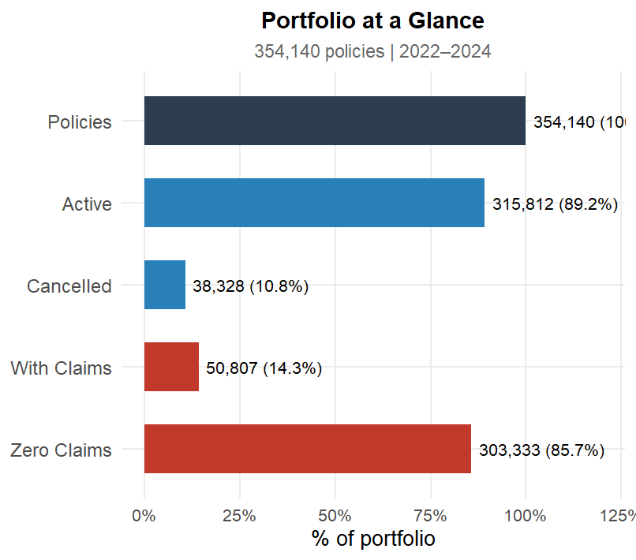
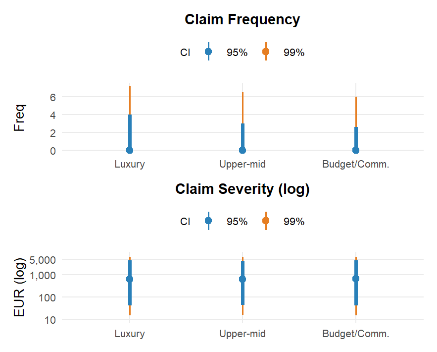
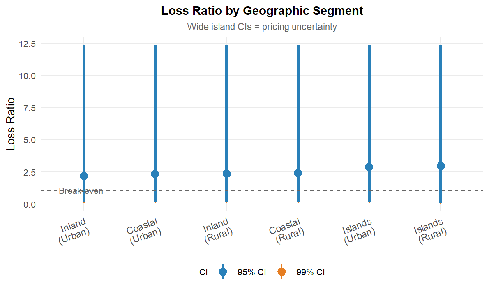

Visual Analytics for Motor Vehicle Insurance
ISSS608 Visual Analytics Individual Assignment
2026-05-15
Slide 8 | Univariate: Driver Age Distribution

Portfolio is concentrated in the 35–60 band; the actuarially safest segment.
- Under-25 drivers are markedly under-represented; higher premiums deter uptake, meaning the insurer attracts only the least price-sensitive young drivers
- Over-65 drivers taper naturally with licence cessation
Statistical implication: The U-shaped age–risk relationship (young and old drivers claiming more) is well established. However, because both risk extremes are thinly populated here, the age signal is statistically diluted; explaining why the Spearman ρ between driver age and claim frequency is near-zero (−0.035) in Slide 12. This is a portfolio composition effect, not evidence that age is irrelevant to risk.
Slide 11 | Bivariate: Claim Severity - Fuel Type & Vehicle Age


Interpretation: Diesel vehicles show statistically higher severity (Wilcoxon p = 0.04) - a consistent median location shift, not a tail effect, supporting a 5–10% diesel severity loading. Vehicle age shows a non-linear U-shape: severity peaks for new vehicles (high replacement value), declines through mid-years, then rises again for very old vehicles (rare parts, specialist labour). A simple declining age factor in the rating engine is therefore incorrect.
Slide 13 | Bivariate: Brand, Status & Behavioural Drivers


Interpretation: Brand tier does not discriminate claim frequency (all tiers identical), but Luxury’s 99% CI extends further upward for severity, confirming disproportionately costly extreme claims. Apply brand tier as a severity tail loading, not a frequency loading. Glass claimers show a bimodal distribution peaking at 1.0 and 2.0 events/year, they almost never appear at zero frequency. Glass claims are confirmed gateway events that co-occur with broader claims activity; a 10–15% frequency loading at renewal for prior-year glass claimers is supported.
Slide 14 | Bivariate: Loyalty & Geographic Drivers


Interpretation: Bad-score policyholders cancel at 25% but 75% stay; the stickiest cohort, likely lacking competitive alternatives. The insurer’s attrition process fails to shed its worst risks; actively pricing Bad-score COMP_N to not-renew is more effective than passive stickiness. Urban segments show consistently higher loss ratios than rural. Island segments have dramatically wide CIs; the observed median loss ratio is statistically unreliable; pricing should apply an explicit uncertainty buffer at the 95th percentile of the CI, not the point estimate.